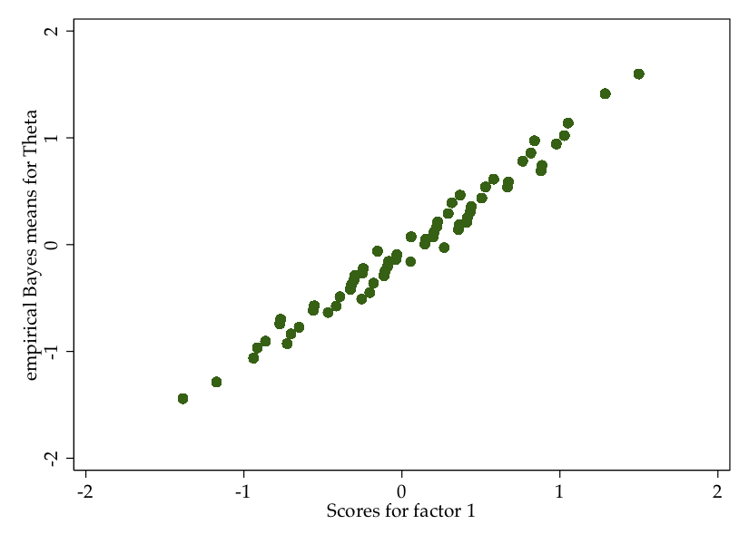

Chapter 6 Item Scaling
6.1 Background Readings
Warshaw, Christopher. 2017. “Latent Constructs in Public Opinion.” The Oxford Handbook of Polling and Polling Methods. DOI: 10.1093/oxfordhb/9780190213299.013.30
Edelen, Maria Orlando and Bryce B. Reeve. 2007. “Applying item response theory (IRT) modeling to questionnaire development, evaluation, and refinement.” Quality of Life Research 16: 5 - 18.
Treier, Shawn and Simon Jackman. 2008. “Democracy as a Latent Variable.” American Journal of Political Science. Vol. 52, No. 1, pp. 201-17.
6.2 Scaling Items in Stata
In the 2010 CCES, respondents were asked to indicate whether they would support using U.S. troops to support each of the following objectives. The objectives were:
| Variable | Objective |
|---|---|
| cc414_1 | Ensure supply of oil |
| cc414_2 | Destroy terrorist camp |
| cc414_3 | Intervene in genocide or civil war |
| cc414_4 | Assist spread of democracy |
| cc414_5 | Protect us allies under attack |
| cc414_6 | Help un uphold international law |
Responses are coded as either “1” if they support the use of troops in that situation and “2” if they do not. Let’s start by re-coding these so that “0” is the code for those who do not support using troops in that situation.
recode cc414 1 cc414 2 cc414 3 cc414 4 cc414 5 cc414 6 (2=0)In the following sections, we examine three methods of combining these six items into a single scale measuring attitudes toward immigration policy.
6.3 Simple Index using alpha
We want to see whether the variables are measuring the same concept. We could do this either by creating a simple index with the alpha command or by creating the index using factor analysis.
To create the index using alpha, we would use the following command:
alpha cc414 1 cc414 2 cc414 3 cc414 4 cc414 5 cc414 6, gen(intervention)The alpha command has Stata indicate the reliability for a set of measures; that is, it indicates the extent to which the variables are measuring the same concept. In this case, our items receive a reliability value of .58, which is not particularly high. We added an option to the command: gen() tells Stata to combine the measures into a single measure that is simply the average value of the other variables. We can think of this variable as the underlying support for military interventions.
You can see how this variable is distributed:
twoway histogram intervention, percent bc(blue)This can simply be interpreted as the proportion of times that respondents supported military intervention. Note that very few supported all reasons for an intervention, and the mode was .5 (half of the situations).
6.4 Index using Factor Analysis factor
Alpha essentially creates a simple addititve index. But a second way to combine these variables is through a factor analysis. Factor analysis potentially provides more information because it allows some items to have more influence over the latent (index) variable than others. To run a factor analysis use the factor command:
factor cc414_1 cc414_2 cc414_3 cc414_4 cc414_5 cc414_6There are two things to look at here. First, the Eigenvalue for the first factor is above 1, which tells us that there is some underlying latent variable that the combination of these variables are jointly measuring. Second, the factor loadings for that first factor are above .3 for all but the sixth variable. Generally, we might drop a variable from our factor analysis if its loading was less than .3 and we did not have a great theoretical reason for it to be there. But in this case we’ll go ahead and keep it in.
So let’s go ahead and use the predict command to generate our new variable that combines the measures of intervention.
predict intervention2The output here gives a sense of how much each variable contributes to the value of the underlying latent variable (intervention2). Note that cc414_6 gets the least weight, which makes sense since it also had the lowest factor loading.
The new variable created by this command (intervention2) is the underlying latent variable that we are assuming captures one’s general support for military interventions. The variable will be created as a standard normal variable, meaning that its mean will be approximately 0 and its standard deviation will be approximately 1. Let’s take a look at the distribution of this variable:
twoway histogram intervention2, percent bc(blue)Note that the distribution of this variable looks quite a bit different from the one we just created with the alpha command. Despite this fact, the measures are fairly highly correlated (at .98). See the scatterplot below. The key difference is that the factor analysis provides a bit more gradation in the measure compared to just averaging the measures.
twoway scatter intervention intervention2, aspect(1) ytitle("Alpha created measure") xtitle("Factor analysis created measure")6.5 Using IRT to Create a Scale
Item response theory (IRT) is another approach to scaling indicators, with its foundations coming from research on testing. Unlike factor analysis, the IRT approach assumes that the items are capturing a single underlying latent variable. IRT is also specifically designed for binary or categorical items. Like factor analysis, IRT allows for some variables to contribute more to determining that latent variable.
Stata 14 includes a family of IRT approaches. The approach we will use here (2 parameter logit - 2pl) is designed for binary items and allows for each item to contribute differently to the construction of the underlying latent variable.
To run the model, we use the following command:
irt 2pl cc414_1-cc414_6As the name of this approach implies, there are two parameters estimated for each item. The first is the discrimination parameter. This parameter indicates how highly correlated the item is with the underlying latent variable. For example, cc414_2 and cc414_5 both have discrimination parameters at or above 2, which indicates that those items are particularly valuable for differentiating respondents on the latent trait. These values are similar to factor loadings.
The second parameter for each item is the difficulty parameter. This is essentially an intercept for each item – indicating how frequently the sample, on average, responded positively to the item. For example, the difficulty parameter for cc414_5 (using troops to protect allies who are under attack) indicates that this was the item that respondents most frequently responded “yes” to (and a simple cross tabulation of the items would confirm this). cc414_4 (using troops to assist the spread of democracy) was the item that individuals responded “yes” to least frequently.
We can visualize these items with the following command:
irtgraph iccThis graphic shows the relationship between the latent trait (theta) and the probability of answering “yes” to each of the items. Note that most of the items have a fairly strong correlation with theta, though this is not particularly true for cc414_6 (which also did not load very highly with the others when we conducted the factor analysis); that item has a gradual slope.
Now, we can turn to generating a variable that captures each individual’s value for the underlying latent trait (theta). To do this, we use the predict command with the , latent option:
predict intervention3, latentAnd just for fun, let’s see how this compares to the latent variable created through factor analysis: 
These are highly correlated (at .996), so at least in this case, it would not have mattered much if you had used IRT or factor analysis.